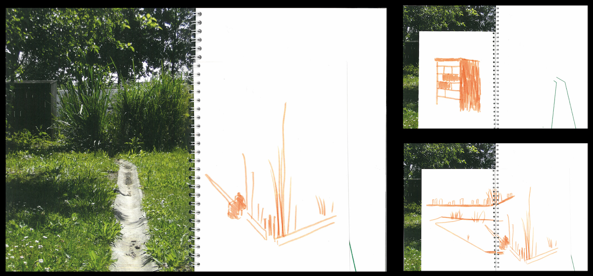
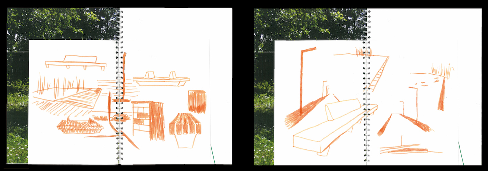
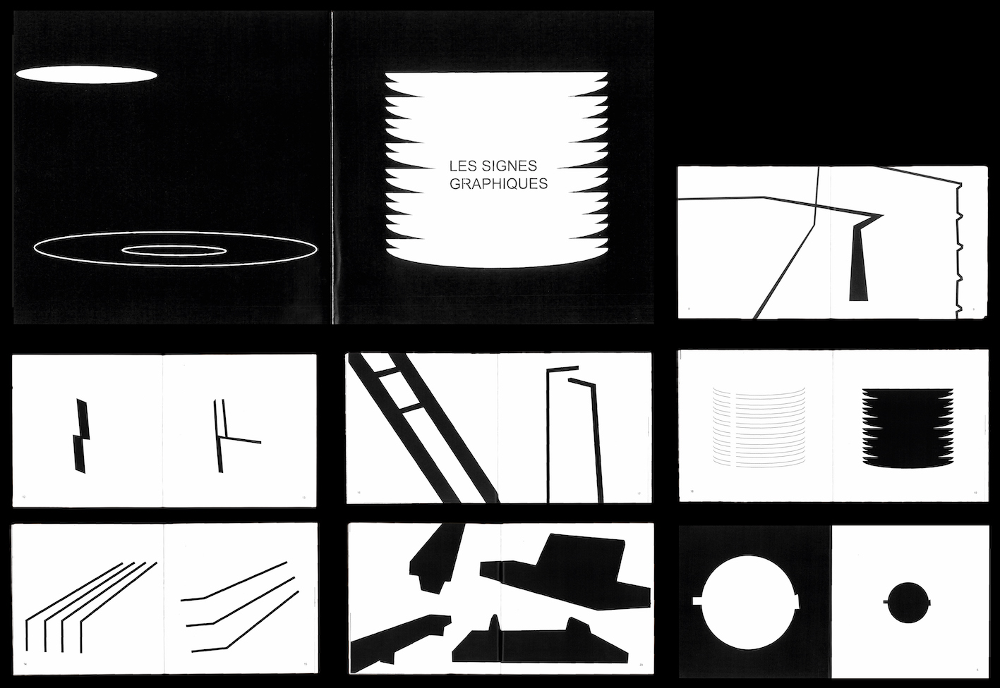
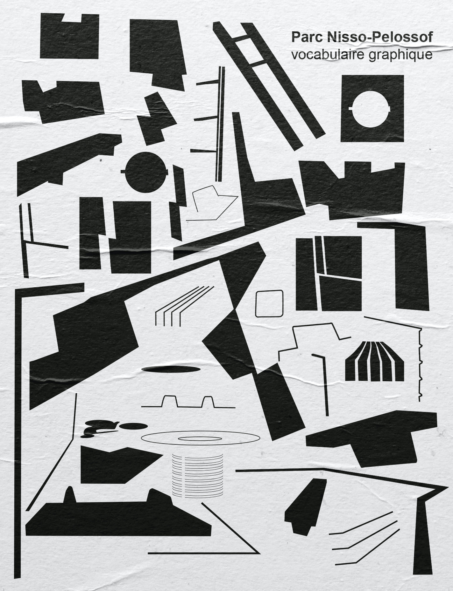

Studies of the Nisso Pelossof park (photos, drawings and notes) based on the "travaux pratiques" of Georges Perec. This analysis aims to create a graphic vocabulary specific to the identity of the park through an edition and a poster.
➔
“Promenade Nisso Pelossof“, edition (21x29.7cm), analysis of the identity and needs of the Nisso Pelossof park in Amiens through photographs, sketches and notes.
 Small edition (14x18cm), collection of sketches included in the edition “Promenade Nisso Pelossof“. Research of distinct forms within the analysis of the identity of the park.
“Les signes graphiques“, edition (21x21cm), collection of the graphic vocabulary of the park Nisso Pelossof following the analysis of its graphic identity.
“Parc Nisso-Pelossof, vocabulaire graphique”, poster (60x80cm), graphic vocabulary set of Nisso Pelossof Park.